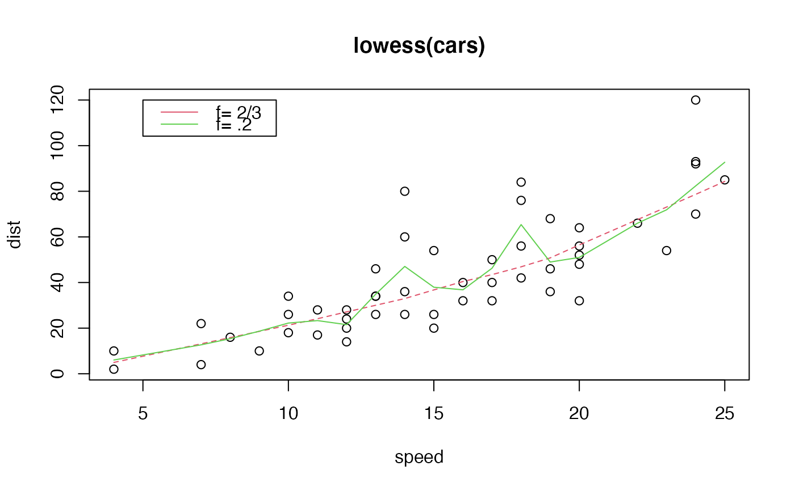

Scatter Plot Smoothing
lowess.RdThe lowess function performs the computations for the
LOWESS smoother (see the reference below).
lowess returns a an object containing components
x and y which give the coordinates of the smooth.
The smooth can then be added to a plot of the original
points with the function lines.
Alternatively, plot can be called directly on the object
returned from lowess and the 'lowess' method for plot
will generate a scatterplot of the original data with a lowess
line superimposed.
Finally, the plotLowess function both calculates the
lowess smooth and plots the original data with a lowess
smooth.
lowess(x, ...) # S3 method for default lowess(x, y=NULL, f=2/3, iter=3L, delta=0.01 * diff(range(x)), ...) # S3 method for formula lowess(formula,data=parent.frame(), ..., subset, f=2/3, iter=3L, delta=.01*diff(range(mf[-response]))) # S3 method for lowess plot(x, y, ..., col.lowess="red", lty.lowess=2) plotLowess(formula, data=parent.frame(), ..., subset=parent.frame(), col.lowess="red", lty.lowess=2 )
Arguments
| formula | formula providing a single dependent variable (y) and an single independent variable (x) to use as coordinates in the scatter plot. |
|---|---|
| data | a data.frame (or list) from which the variables in `formula' should be taken. |
| subset | an optional vector specifying a subset of observations to be used in the fitting process. |
| x, y | vectors giving the coordinates of the points in the scatter plot. Alternatively a single plotting structure can be specified. |
| f | the smoother span. This gives the proportion of points in the plot which influence the smooth at each value. Larger values give more smoothness. |
| iter | the number of robustifying iterations which should be
performed.
Using smaller values of |
| delta | values of |
| ... | parameters for methods. |
| col.lowess, lty.lowess | color and line type for plotted line |
References
Cleveland, W. S. (1979) Robust locally weighted regression and smoothing scatterplots. J. Amer. Statist. Assoc. 74, 829--836.
Cleveland, W. S. (1981) LOWESS: A program for smoothing scatterplots by robust locally weighted regression. The American Statistician, 35, 54.
See also
loess (in package modreg), a newer
formula based version of lowess (with different defaults!).
Examples
# # formula method: plot, then calculate the lowess smoother, # then add smooth to the plot # plot(dist ~ speed, data=cars, main="lowess(cars)")# # formula method: calculate lowess() smoother, then call plot() # on the lowess object # lw <- lowess(dist ~ speed, data=cars) plot(lw, main="lowess(cars)" )# # formula method: calculate and plot in a single command # plotLowess(dist ~ speed, data=cars, main="lowess(cars)")# \dontshow{ # test non-standard evaluation with(cars, plotLowess(dist ~ speed, main="lowess(cars)") ) with(cars, plot(lowess(dist ~ speed, main="lowess(cars)") ) )idx <- cars$speed > 10 plotLowess(dist[idx] ~ speed[idx], data=cars, main="lowess(cars)")local({ dist <- cars$dist speed <- cars$speed plotLowess(dist[idx] ~ speed[idx], main="lowess(cars)") plot(lowess(dist[idx] ~ speed[idx], main="lowess(cars)")) })# }